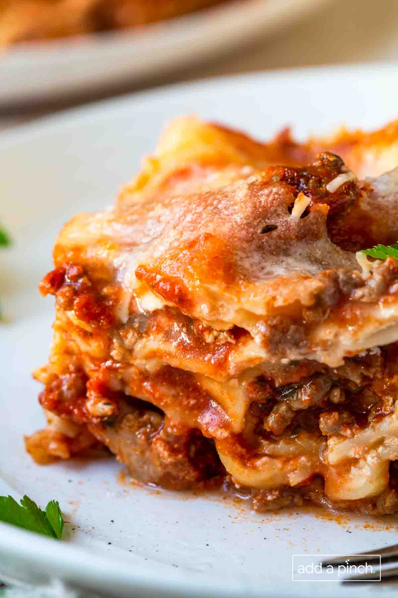

Lasagna

Homemade Lasagna is a classic recipe that every cook needs in their recipe box. Tender layers of pasta, a cheese filling, and a flavorful meaty tomato sauce make a family favorite recipe.
Why We Love This Recipe
Easy recipe. Each step of the recipe is easy, uses simple ingredients, and every bite has so much flavor.
Meal prep favorite. This lasagna can easily be made ahead and stored in the refrigerator. It also freezes beautifully making it a meal prep favorite!
Family friendly. The recipe as written can be adjusted based on your family’s preferences! Vegetarian – omit the meat and use mushrooms, etc..
Ingredients
- 1 pound lasagna noodles (cooked according to package directions)
- 1/2 pound ground beef
- 1/2 pound ground Italian sausage
- 1 1/2 teaspoons Stone House Seasoning
- 2 teaspoons dried basil
Instructions
- Preheat oven to 350º F. Spray a 9×13 baking dish with nonstick cooking spray and set aside. Cook and drain the lasagna noodles. Set aside.
- Cook ground beef and Italian sausage in a large skillet over medium heat. Drain the meat well. Stir in the Stone House Seasoning, basil, oregano, pasta sauce and tomato paste. Simmer until sauce has thickened, about 5 to 10 minutes.
- Lightly beat the egg in a large mixing bowl. Add the cream cheese, Greek yogurt, 2 cups Mozzarella cheese, ¼ cup Parmesan cheese, and parsley (optional). Stir to combine well.
- Ladle 1 cup Meat Sauce into the prepared 9×13 baking dish. Top with a layer of the lasagna noodles. Spread ⅓ of the Cheese Mixture over the noodles and top with 1 cup of Meat Sauce.
- Cover lightly with aluminum foil and bake for 40 minutes.
- Remove foil and top with remaining 2 ½ cups Mozzarella cheese, ¼ cup Parmesan cheese. Bake uncovered until browned, about 15 minutes. Rest for 10 minutes before cutting and serving.